虚拟内存
Table of Contents
1 物理寻址和虚拟寻址
cpu使用物理地址的方式访问主存的方式称为物理寻址。
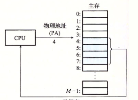
Figure 1: 物理寻址
cpu通过生成一个虚拟地址（VA）来访问主存，虚拟地址被送到内存之前先转化成物理地址。虚拟地址转换物理地址的任务称作地址翻译。由CPU芯片中的内存管理单元（MMU）来完成，利用存放在主存中的查询表来动态翻译虚拟地址，表的内容由操作系统管理。
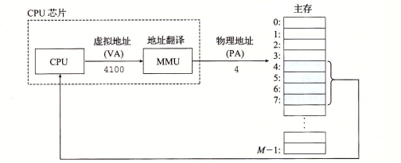
Figure 2: 虚拟寻址
2 地址空间
地址空间是一个非负整数地址的有序集合，如果地址空间中的整数是连续的，称之为线性地址空间。一个带有虚拟内存的系统中，cpu从一个 N=2n 个地址空间中生成虚拟地址，这个地址空间称为虚拟地址空间， 其大小由地址的位数（n）决定。现代系统通常支持32位或者64位的虚拟地址空间， 即232或264的地址空间。
地址空间的概念清楚的区分了数据对象（字节）和它们的属性（地址）。 每个数据对象可以由多个独立的地址，每个地址选自不同的地址空间。 这就是虚拟地址空间的基本思想。 主存中的每个字节都有一个选自虚拟地址空间的虚拟地址和选自物理地址空间的物理地址。
3 虚拟内存作为缓存的工具
概念上来说，虚拟内存被组织为一个由存放在磁盘上的N个连续的字节大小的单元组成的数组。每个字节都以一个唯一的虚拟地址，作为到数组的索引。磁盘上的内存被缓存在主存中。磁盘上的数据被分割成块（block），作为和主存之间的传输单元。VM系统将虚拟内存分割为固定大小块的虚拟页来与之对应。虚拟页大小P=2p字节，物理内存也被分割为物理页（页帧），页大小也是P字节。 虚拟页的大小一般为4KB～2MB。
任意时刻，虚拟页面的集合都分为三个不相交的子集：
- 未分配：VM系统还没有分配（或创建）的页。不占用磁盘空间。
- 缓存的：当前以缓存在物理内存中的已分配页。
- 未缓存：未缓存在物理内存的已分配页。
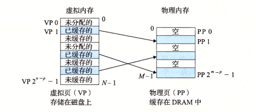
Figure 3: VM使用主存作为缓存
3.1 DRAM缓存的组织结构
以下使用SRAM标识CPU和主存之间的L1、L2和L3高速缓存， DRAM表示虚拟内存系统的缓存，在主存中缓存虚拟页。
由于DRAM缓存的不命中需要由磁盘来提供服务，开销很大， 所以DRAM缓存设计为全相连的，即任何虚拟页都可以放置在任何的物理页中， 由于大的不命中处罚，在不命中时的替换策略也很重要，其替换策略相比SRAM缓存来说，更加复杂和精密。由于对磁盘的访问时间很长，DRAM使用写回（write-back）而不是直写。
3.2 页表
虚拟内存系统需要通过某种方法判定一个虚拟页是否缓存在DRAM中并确定存放在那个物理页中，或者不命中时确定虚拟页所存放的磁盘位置，并从物理内存选择一个物理页来存放虚拟页。 这个功能由软硬将联合提供， 包括操作系统软件、MMU和存放在物理内存的页表，页表将虚拟页映射到物理页。每次地址翻译硬件将虚拟地址转换为物理地址时，都会读取页表。操作系统负责维护页表的内容以及在磁盘和DRAM之间来回传送页。
页表就是一个页表项（page table entry）的数组。虚拟地址空间中的每个页在页表固定偏移量出都有一个PTE。 假设每个PTE由一个有效位和一个n位地址字段组成。如果有效，则地址字段标识DRAM中物理页的起始位置，如果无效，则表示该页位分配或者指向虚拟页在磁盘的起始位置。 下图展示了页表的 基本组织结构 ：
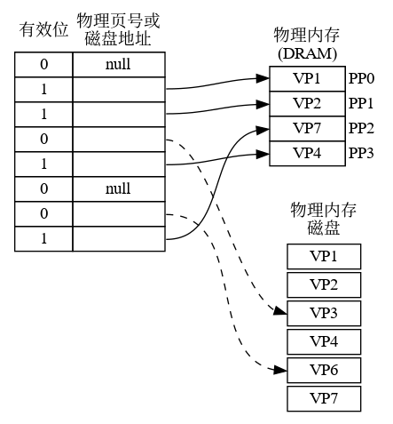
- VP1、VP2、VP4和VP7被缓存在DRAM中。
- VP0、VP5未分配。
- VP3、VP6已分配，未被缓存。
3.3 页命中
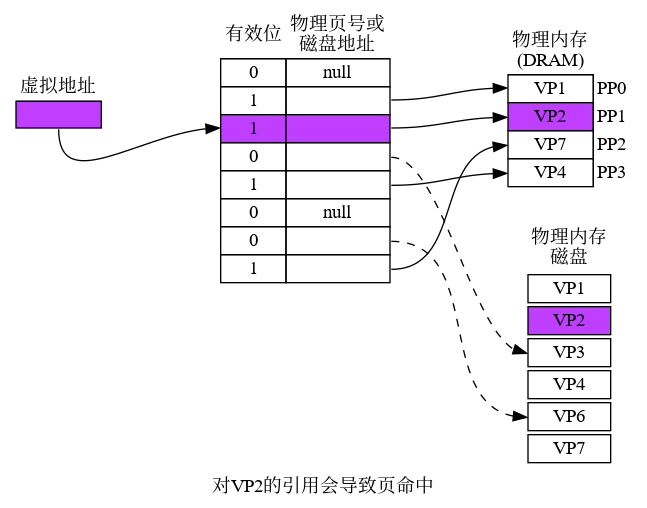
Figure 5: 页命中
cpu读取VP2中虚拟内存中的一个字时，在页表通过虚拟地址定位到PTE2。由于该页表项有效，说明VP2已经缓存在主存中，通过PTE中的物理内存地址构造出要读取的字的物理地址。
3.4 缺页
虚拟内存中，DRAM缓存不命中称为却页（page fault）。
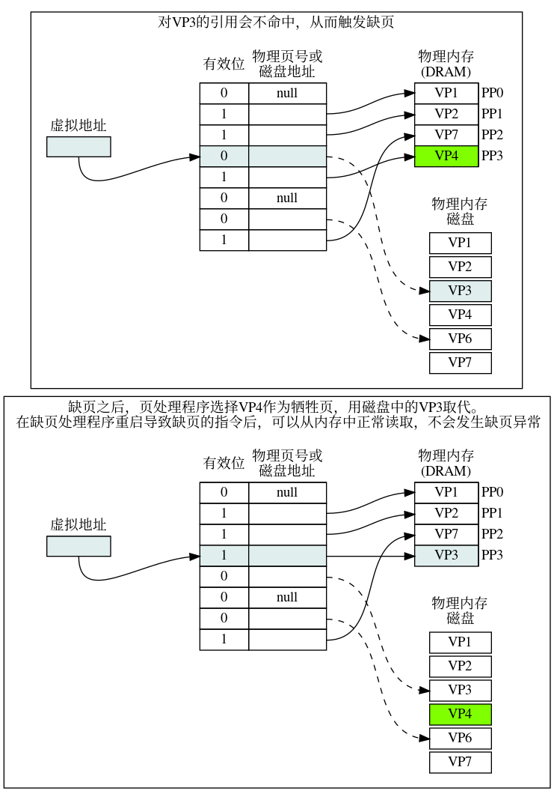
Figure 7: 缺页处理
- cpu引用VP3中的一个字;
- 地址翻译硬件从内存中读取PTE3，由于未被缓存，引发缺页异常;
- 缺页异常调用系统的缺页处理程序，选择一个牺牲页（VP4），如果牺牲页被修改，则写回到磁盘;
- 将磁盘的VP3复制到物理内存的PP3，更新PTE3。
- 缺页处理程序返回后，重新执行导致缺页的指令，该指令将导致缺页的虚拟地址发送到地址翻译硬件。
- 此时页命中，正常处理。
3.5 分配页面
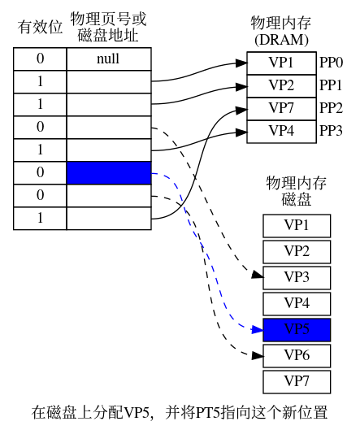
3.6 局部性
在程序的整个运行过程中，其引用的页面总数可能超过了物理内存的大小，但由于局部性原则，在任意时刻，程序趋向与在一个较小的页面集合中工作，这个集合叫做工作集或者常驻集合。在开始的时候将工作集页面调度到内存中后，接下来对这个工作集的引用导致页面命中，不会产生额外的磁盘开销。
如果程序有良好的时间局部性，虚拟内存就可以工作的很好。但是如果工作集超过了物理内存大小，就会产生抖动状态，这时页面不断的换入换出。
4 虚拟内存作为内存管理的工具
目前为止，都假设有一个单独的页表，将虚拟地址空间映射到物理地址空间。实际上，操作系统为进程提供了独立的页表，即独立的虚拟地址空间。其 基本思想 如下：
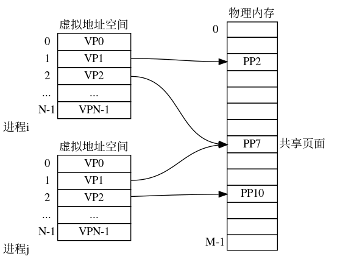
Figure 10: 进程独立的进程空间
按需页面调度 和 独立的虚拟地址空间 的结合，对系统中内存的使用和管理造成了深远的影响。 VM简化了链接和加载、代码和数据共享，以及应用程序的内存分配。
- 简化链接
独立的地址空间允许每个进程的内存映像使用相同的基本格式，无需关心代码和数据实际存放到物理内存的什么位置。
例如在linux系统上的每个进程都使用类似的内存格式，对于64位地址空间，代码段总是从虚拟地址0x400000开始。数据段跟在代码段之后，中间有一段符合要求的对齐空白，栈在用户进程地址空间最高的位置，并向下生长。
- 简化加载
- 虚拟内存使得很容易向内存中加载可执行文件和共享对象文件。要把目标文件中的.text和.data段加载到新创建的进程中，linux加载器位代码段和数据段分配虚拟页，并标记位无效（未缓存），将页表项指向目标文件中适当的位置。 加载器不会立即从磁盘向内存复制数据。每个页的初次引用都是由于当cpu读取指令引用，或者一条正在执行的指令引用一个内存而引用的，虚拟内存系统会按照需要自动的调入数据页。
- 简化共享
独立地址空间为操作系统提供了一个管理用户进程和操作系统自身之间共享的相同机制。一般而言，进程都有自己的私有的代码、数据、堆栈等区域，进程之间彼此不共享。这种情况下，系统创建页表，并将相应的虚拟页映射到不连续的物理页面。
进程之间也需要共享某些代码和数据。 例如，每个进程必须调用相同的操作系统内核代码，c程序的标准库。系统通过将不同进程中的时当的虚拟页面映射到相同的物理页面，从而使得进程共享这部分代码的副本，而无需在每个进程中都包含单独的内核和c标准库的副本。
- 简化内存分配
- 虚拟内存为用户进程提供了一个简单的分配额外内存的机制。例如用户进程要分配堆空间（malloc调用），系统分配适合的连续虚拟内存页，并将其映射至任意位置的物理内存页，而无需连续的物理内存页，这要归功于页表的工作方式。
5 虚拟内存作为内存保护的工具
操作系统中，不应当允许用户进程修改它的只读代码段，也不允许其读取或者修改任何内核中的代码和数据，也不允许读取或者修改其他进程的私有内存， 而且也不允许修改和其他进程共享的虚拟页，除非所有的共享者都明确允许修改。
独立的地址空间使得区分不同进程的私有内存变得容易。地址翻译机制通过扩展虚拟地址提供了更好的访问控制机制。当CPU生成一个地址时，地址翻译硬件都会读取一个PTE，通过在在PTE中添加额外的许可位来控制对虚拟页的访问。以下展示了 大致逻辑 ：
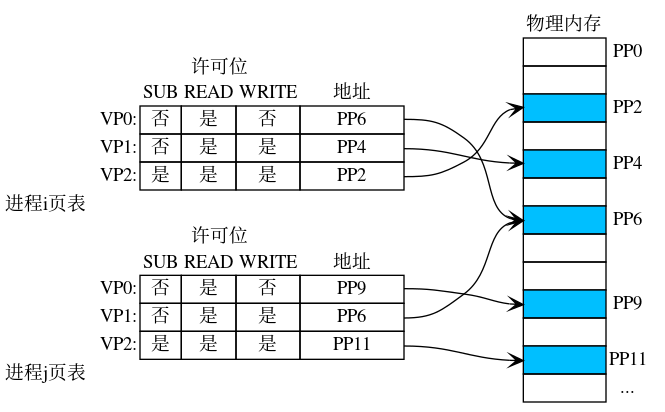
Figure 12: 利用虚拟内存提供页面的内存保护
这个示例中，每个PTE中添加了三个许可标志位。SUP标识是否只有超级用户可以访问该页。内核中的进程可以访问任何页面，用户进程只能访问SUP为0的页面。 READ和WRITE分别读和写。上图中，如果进程i运行在用户态，对VP0只读，VP1可以读写，VP2不能访问。
如果一条指令违反了许可条件，CPU触发一个一般保护故障，将控制权传递给内核的一场处理程序。linux shell中称为“段错误（segmentation fault）”
6 地址翻译
本节讨论地址翻译的基础知识，目的是了解硬件在支持虚拟内存中的角色，其中省略了大量的细节。
以下概括了后续讨论中的所有符号：
| 符号 | 描述 |
|---|---|
| N=2n | 虚拟地址空间中的地址数量 |
| M=2m | 物理地址空间的地址数量 |
| P=2p | 页的大小（字节） |
| 符号 | 描述 |
|---|---|
| VPO | 虚拟页面偏移量（字节） |
| VPN | 虚拟页号 |
| TLBI | TLB索引 |
| TLBT | TLB标记 |
| 符号 | 描述 |
|---|---|
| PPO | 物理页面偏移量（字节） |
| PPN | 物理页号 |
| CO | 缓冲区内的字节偏移量 |
| CI | 高速缓存索引 |
| CT | 高速缓存标记 |
下图展示了MMU如何利用页表实现虚拟地址到物理地址的映射：
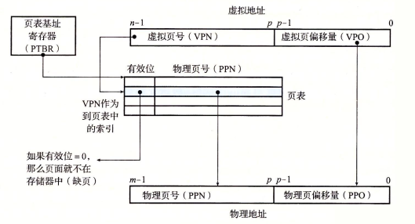
Figure 14: 使用页表进行地址翻译
cpu中的一个控制寄存器，页表基址寄存器（PTBR）指向当前页表。n位的虚拟地址包含两部分：p位的虚拟页面偏移（VPO）和n-p位的虚拟页号（VPN）。MMU利用VPN选择PTE，然后将页表中的物理页号（PPN）和虚拟页面偏移（VPO）组合得到相应的物理地址。
下图分别展示了页面命中和缺页时的步骤：
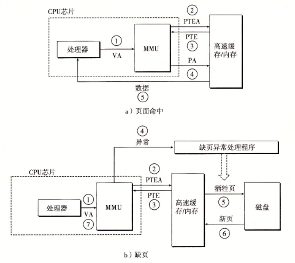
Figure 15: 页面命中和缺页的操作图（VA：虚拟地址 PA：物理地址 PTEA：页表项地址 PTE：页表项）
页面命中：
- cpu生成虚拟地址，送给MMU。
- MMU生成PTE地址，读取高速缓存/主存。
- 高速缓存/主存向MMU返回PTE。
- MMU构造物理地址并传送给高速缓存/主存。
- 高速缓存/主存返回所请求的数据给CPU。
缺页：
- cpu生成虚拟地址，送给MMU。
- MMU生成PTE地址，读取高速缓存/主存。
- 高速缓存/主存向MMU返回PTE。
- PTE中有效位为0，MMU触发一次异常，并将cpu控制权交给操作系统内核的缺页处理程序。
- 缺页处理程序确定物理内存中的牺牲页，如果牺牲页被修改，则写回到磁盘。
- 缺页处理程序调入新的页面，并更新内存中的PTE。
- 缺页处理程序返回到原先的进程，再次执行导致缺页的指令。cpu重新将缺页的地址发送给MMU。由于此时已经缓存，会继续上述的页面命中的逻辑。
6.1 结合高速缓存和虚拟内存
大部分系统的高速缓存采用物理寻址的方式，这样多个进程同时在高速缓存中存放存储块或者共享来自相同虚拟页面的块就变得很容易，并且高速缓存无需处理保护问题，地址翻译过程中会进行权限检查。
以下是物理寻址的高速缓存和虚拟地址结合的场景。地址翻译发生在高速缓存查找之前。 注意：页表项也是可以缓存的。
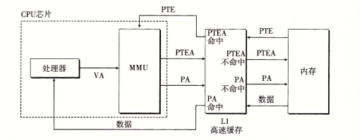
Figure 16: VM和物理寻址的高速缓存结合（VA：虚拟地址 PA：物理地址 PTEA：页表项地址 PTE：页表项）
6.2 利用TLB加速地址翻译
每次cpu产生一个虚拟地址，MMU就需要查阅一个PTE，以便将虚拟地址翻译为物理地址，为了消除这个开销，很多系统在其MMU中包含一个存放PTE的缓存，称为 翻译后备缓冲器 (Translation Lookaside Buffer, TLB)。
TLB是一个小的、虚拟寻址的缓存，其每行保存这一个由单个PTE组成的块。 TLB通常由较高的相连度。
如下图所示，用于组选择和行匹配的索引和标记字段是从虚拟地址的虚拟页号（VPN）中提取的， 如果TLB有 T=2t个组，那么TLB索引（TLBI）就是VPN的t个最低位组成，TLB标记位由VPN的剩余位组成。
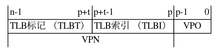
下图展示了TLB命中和不命中的步骤。注意：所有的地址翻译工作都在MMU中进行，速度很快。
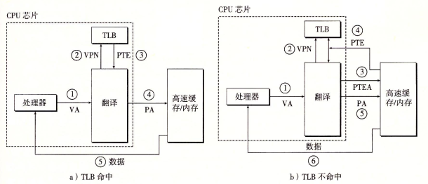
Figure 18: TLB命中和不命中的操作图
TLB命中 :
- CPU产生一个虚拟地址。
- MMU从TLB中取出对应的PTE。
- 同上。
- MMU将虚拟地址翻译为物理地址，并发送至高速缓存/主存。
- 高速缓存/主存将所请求的数据返回给CPU。
当TLB不命中时，需要从L1高速缓存中取出相应的PTE，并存储到TLB中。
6.3 多级页表
上述讨论都假设系统使用一个单独的页表， 考虑以下32位的地址空间、4KB的页面和4字节的PTE，即使只引用虚拟地址空间的一小部分，也总是需要4MB的页表驻留在内存中，64位地址空间更加复杂。
为解决上述的问题，系统中一般使用多级页表。
假设32位的地址空间被分为4K的页，每个页表项为4字节，还假设此刻虚拟地址空间中，前2K个页面分配给了代码和数据，接下来的6K页面未分配，紧接着的1023个页也未分配，紧接着的1个页面分配给了用户栈。下图展示了这种情况下的结构：
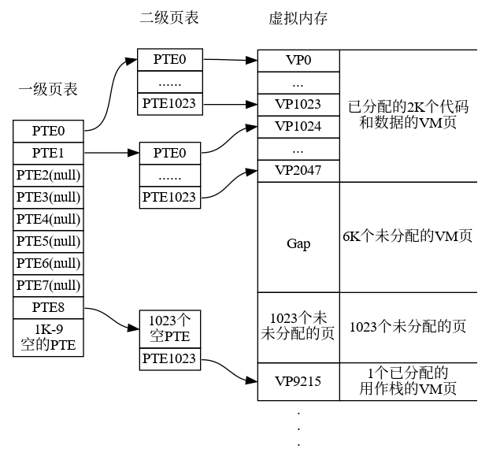
一级页表中的每个PTE负责映射虚拟地址空间中的一个4MB的片（chunk）,这里的每个片都是由1024个连续的页面组成。比如PTE0映射第一片，PTE1映射接下来的一片，32位的地址可以寻址4GB地址空间, 1024个PTE足够覆盖整个空间了. 如果片i中的每个页面都未分配,那么一级页表中的PTEi就为空, 如果片i中至少一个页被分配,那么PTEi就指向一个二级页表的基址。二级页表中的每个PTE都负责映射一个4KB的虚拟内存页。
这种方法从两个方面减少了内存要求：
- 如果一级页表的PTE是空的，那么相应的二级页表就不会存在。
- 只有一级页表需要在主存中，二级页表可以在需要的时候再创建、页面调入和调出，只要常用的二级页表会在主存中。
对于k级页表的地址翻译： 虚拟地址被划分为k个VPN和一个VPO 每个VPN i都对应第i级页表的索引， 1 <= i <= k。 第j级页表的PTE都指向j+1级页表的基址， 1 <= j <= k-1。 第k集页表的每个PTE包含某个物理页面的PPN或者磁盘块的地址。 为了构造物理地址，在确定PPN之前，需要访问k个PTE。
访问k个PTE看上去很昂贵，但是由于TLB缓存了PTE，实际上多级页表不会比单级页表慢很多。
6.4 地址翻译的示例
假设：
- 内存按字节寻址
- 内存访问是针对1字节（非4字节）
- 虚拟地址14位长 （n=14）
- 物理地址12位长 （m=12）
- 页面大小64字节 （P=64）
- TLB四路组相连，16个条目
- L1 d-cache物理寻址，直接映射，行大小4字节，共有16个组
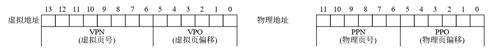
如上图所示， 由于页面大小为64=26, 则物理地址和虚拟地址的低六位分别用作PPO和VPO。虚拟地址高8位为VPN，物理地址高6位为PPN。
下图展示了一个小内存系统的快照，TLB、部分页表、L1高速缓存。
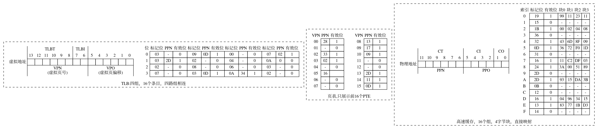
在这种假定情况下，当cpu执行一条读取地址0x03d4处的指令会执行以下过程：
注意：我们假设cpu读取1字节的字，而非4字节。
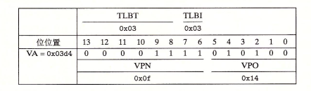
首先MMU从地址中抽取出VPN（0x0f），并检查TLB看是否有PTE 0x0f的副本。 TLB从VPN中分别抽取出TLB索引（0x03）和TLB标记（0x3）， 组3中的第二个条目匹配且有效，所以TLB命中，将缓存的PPN（0x0D）返回给MMU。 如果TLB不命中，则MMU需要从主存中读取PTE。
现在，我们得到了PTE的PPN（0x0D）以及虚拟地址的VPO（0x14），这就组成了物理地址0x354。
接着MMU将物理地址发送给高速缓存， 高速缓存从地址中抽取出缓存偏移CO（0x0）和缓存索引CI（0x5）以及缓存标记CT（0x0D）。
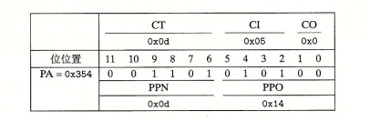
因为组0x5中的标记和CT（0x0D）相匹配，缓存命中，从偏移量CO（0x0 即块0）处读取数据字节（0x36），并将其返回给MMU，MMU在将其返回给CPU。
翻译过程中也可能是其他情况，例如TLB不命中，MMU从页表的PTE中读取PPN，如果PTE无效，将产生缺页，内核需要调入页面，而后重新执行该指令。另一种情况是PTE是有效的，但是高速缓存不命中。
7 Intel Core i7/Linux 内存系统
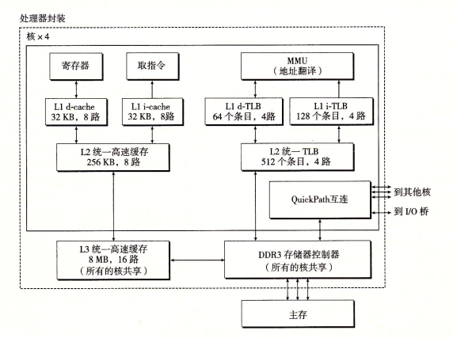
上图是Core i7内存系统的重要部分。处理器封装包括四个核、一个大的被所有核共享的L3高速缓存，以及一个DDR3内存控制器。每个核包含各异层次结构的TLB、一个层次结构的数据和指令高速缓存，以及彝族快速的点到点链路，这种链路基于QuickPath技术，是为了让一个核与其他核和外部I/O桥直接通信。TLB是虚拟寻址的，四路组相连。L1、L2和L3高速缓存是物理寻址的，块大小为64字节。L1和L2是8路组相连，L3是16路组相连。页大小可以在启动时被配置为4KB或4Mb。Linux使用4KB的页。
7.1 Core i7地址翻译
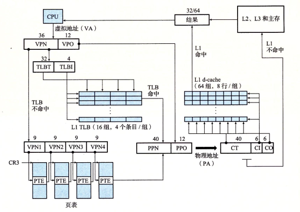
上图总结了完整的Core i7地址翻译过程（从CPU产生虚拟地址开始一直到来自内存的数据字到达CPU）。Core i7采用四级页表层次结构。每个进程有自己私有的页表层次结构。当Linux进程在运行时，虽然Core i7体系结构允许页表换入换出，但是已分配页相关联的页表都是驻留在内存中的。CR3控制寄存器指向第一级页表的起始位置。CR3的值是每个进程上下文的一部分，每次上下文切换时，CR3的值都会被恢复。
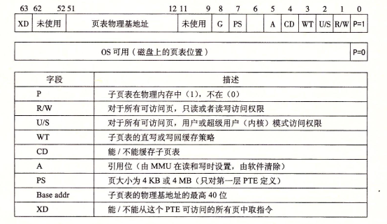
上图给出了第一级、第二级和第三级页表条目的格式。当P=1时（linux中总是如此），地址字段包含一个40位物理页号（PPN），它指向适当的页表起始处。注意，这要求物理页表4KB对齐。
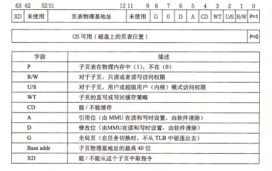
上图给出了第四级页表条目的格式。当P=1时，地址字段包括了一个40位的物理页号（PPN），它指向物理内存中的某一页的基地址。这要求物理页4KB对齐。
PTE有三个权限位，控制对页的访问。R/W位确定页的读写权限。U/S位确定是否能在用户模式中访问该页，从而保护操作系统内核中的代码和数据不被用户程序访问。XD（禁止执行）位是在64位系统中引入，可以用来禁止从某些内存页读取指令，通过限制只能执行只读代码段，使得操作系统内核降低缓冲区溢出攻击的风险。
当MMU对虚拟地址翻译时，还会更新两个内核缺页处理程序会使用的位，每次访问一个页时，MMU会设置A位（引用位），内核使用这个位实现页面置换算法。每次对一个页写后，MMU会设置D位，称为修改位或者脏位， 这个位高速内核在复制替换页之前是否必须写回牺牲页。内核可以通过调用特殊指令来清除引用位和修改位。
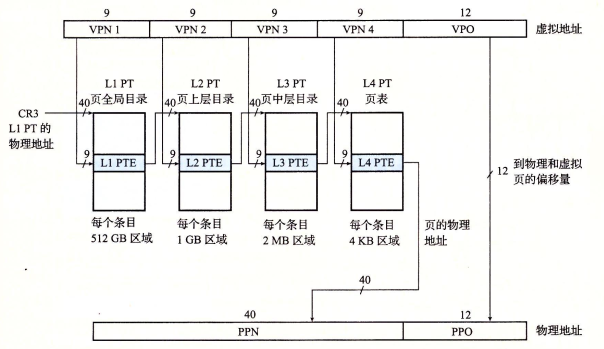
上图给出了Core i7的MMU使用四级页表将虚拟地址翻译为物理地址的过程，36位的VPN被划分为4个9位的片，每个片被用作到一个页表的偏移量。CR3保存了一级页表的物理地址，VPN1提供了一级页表中的PTE的偏移量，这个PTE包含了二级页表的基地址。VPN2提供了二级页表中的PTE的偏移量，以此类推。
7.2 linux虚拟内存系统
linux为每个进程维护了一个单独的虚拟地址空间，如下图所示
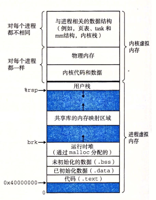
内核虚拟内存包含内核中的代码和数据结构。内核虚拟内存的某些内存区域映射到所有进程共享的物理页面。例如，每个进程共享内核的代码和全局数据结构。Linux也将一组连续的虚拟页面（大小等于系统中的DRAM的总量）映射到相应的一组连续的物理页面。这为内核提供了一种便利的方法来访问物理内存中任何特定的位置，例如当内核需要访问页表或在某些设备上执行内存映射的I/O操作，而这些设备被映射到特定的物理内存位置。
7.2.1 Linux 虚拟内存区域
Linux将虚拟内存组织为一些区域（段）的集合。一个区域就是已经存在的（被分配的）虚拟内存的连续片，这些页以某种方式相关联。 例如，代码段、数据段、堆、共享库段以及用户栈都是不同的区域。每个存在的虚拟页面都必定保存在某个区域中，不属于区域内部的虚拟页不存在，且不能被进程引用。 区域的概念允许虚拟地址空间有间隙。内核无需记录不存在的虚拟页。
以下是一个进程中虚拟内存区域的内核数据结构。内核为系统中的每个进程维护了一个单独的任务结构。任务结构中的一个条目指向mm_struct，他描述了虚拟内存的当前状态。其中pgd指向一级页表（页全局目录）的基址，而mmap指向一个vm_area_structs结构的链表，其中每个vm_area_structs都描述了当前虚拟地址空间的一个区域。内核切换到该进程时就将pgd存放在CR3控制寄存器中。
vm_area_struct 成员描述：
- vm_start: 区域的起始位置
- vm_end: 区域的结束位置
- vm_prot: 区域内的页的读写权限
- vm_flags: 区域内页面的属性（共享，私有…）
- vm_next: 链表中的下一个区域结构
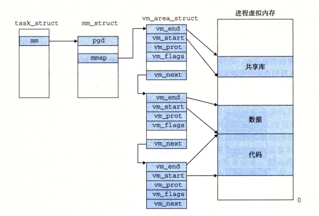
7.2.2 Linux缺页异常处理程序
假设当MMU翻译某个虚拟地址A时，触发缺页，导致控制权转移到内核的缺页处理程序，然后执行以下步骤：
- 虚拟地址A是否合法？也就是说A是否属于某个区域结构（vm_area_struct）定义的区域内？ 首先程序搜索区域结构的链表，将A和区域结构的vm_start和vm_end作比较（实际上内核通过在链表中构建树，在树中搜索）。如果没找到，则触发段错误，终止进程。
- 进程是否有读、写或者执行这个区域页面的权限。
- 如果是合法地址，则选择一个牺牲页，如果这个牺牲页被修改过，则将此页面交换出去，换入新的页面，并更新页表，当缺页程序返回时，CPU重新启动引起缺页的指令。
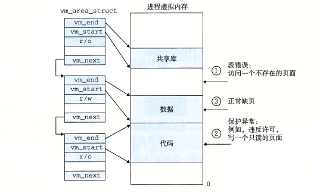